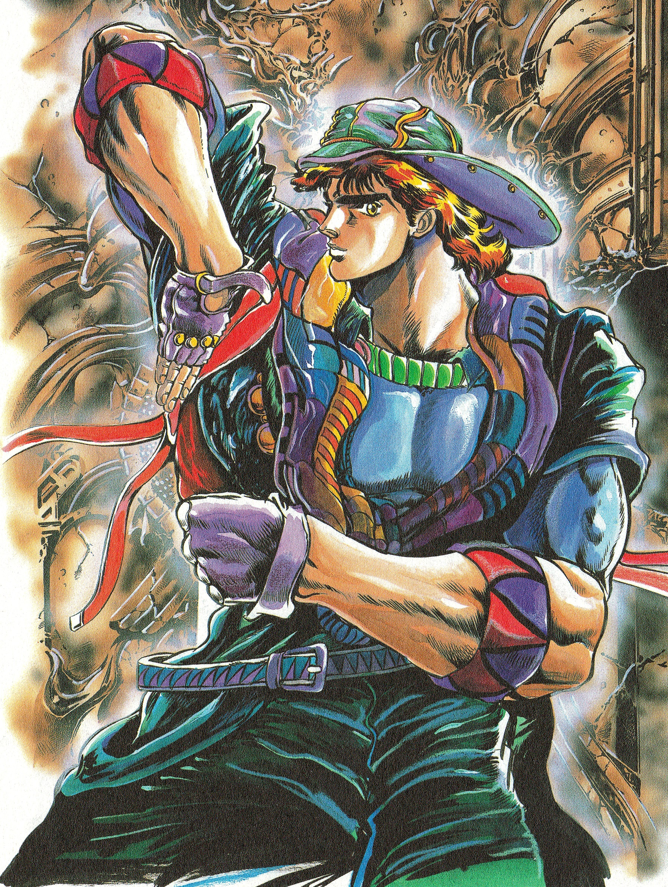
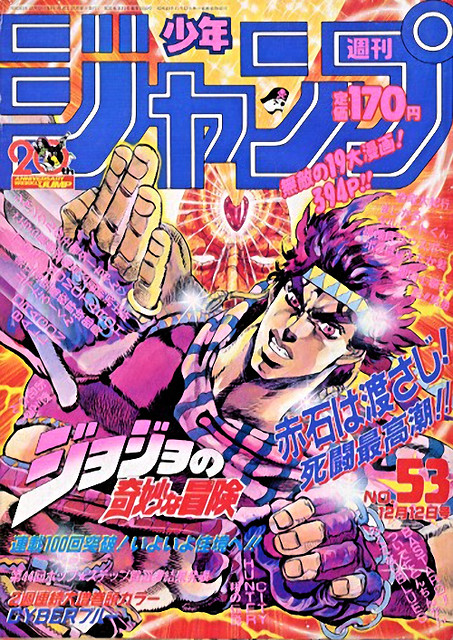
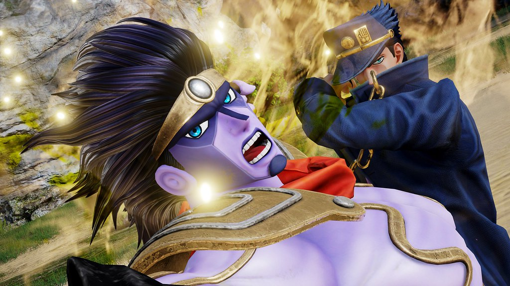
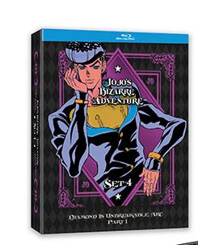
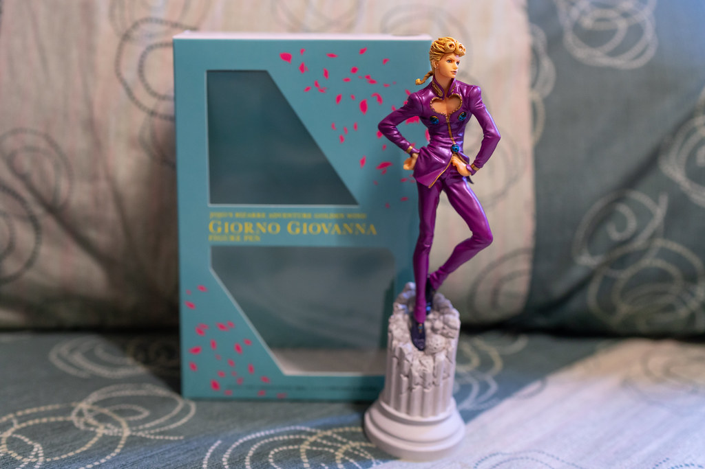

Jojo's Bizarre Adventures is a Japanese manga and anime created by Hirohiko Araki in 1987. It follows the Joestar family line throughout their "bizarre adventures" fighting against enemies using their psychic powers. Jojo's Bizarre Adventure is in it's 8th part as of February of 2022.
"I'm not afraid to die here. But I am a proud member of the Zeppeli family. So you see, it's in my blood. Something like this might mean absolutely nothing to a demented and inhuman monster like you. My father didn't recognize me, but he sacrificed his life to save mine anyway. My grandfather gave his Hamon energy to save JoJo's grandfather, right before he died. It's tradition, I have to do something. I can't let my life's flame, just flatter out to darkness. This the Zeppeli family spirit! Handed down from the past to ensure the family's future! It's the human spirit! JoJo! This is the last of my Hamon! Take it from me! - Caeser Zeppeli
"Like a fine wine, I guess I just get better with age." - Joseph Joestar
"Father…Rest in peace. Let the smoke guide your soul to heaven. But I ask you for a final favor, let the flames burn with your strength.""- Jonathan Joestar
"I’m willing to see our transaction through, are you sir? I’m fighting to protect my family from those that wish it harm, I doubt very much that your resolve is equal to mine."- Jonathan Joestar
"I’m willing to see our transaction through, are you sir? I’m fighting to protect my family from those that wish it harm, I doubt very much that your resolve is equal to mine."- Giorno Giovanna
| Jonathan Joestar | Joseph Joestar | Jotaro Kujo | Josuke Higashikita | Giorno Giovanna |
|---|---|---|---|---|
|  |  |  |  |  |
| Part 1 | Part 2 | Part 3 | Part 4 | Part 5 |
Telephone : 515 072 1233